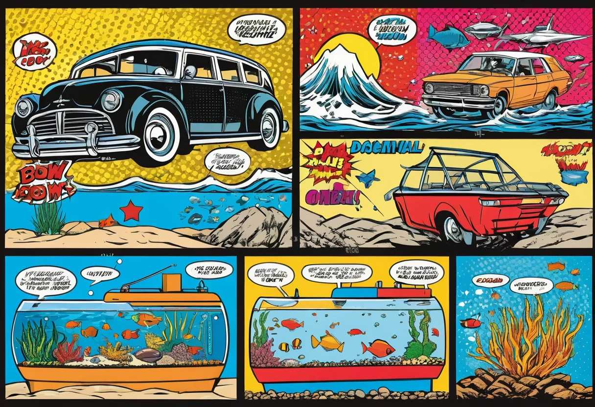
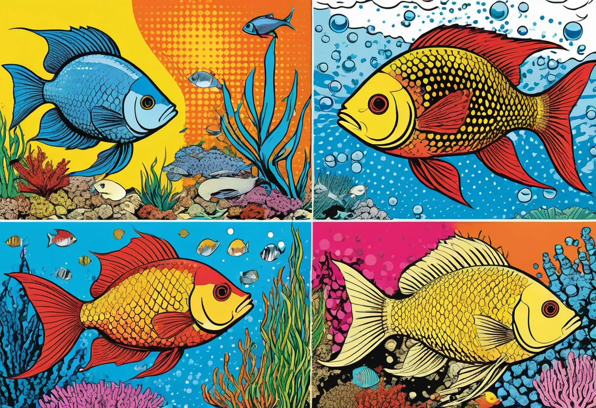

Aquarium Beckenformen und Größen – Das richtige Becken für deine Zwecke
Die Wahl der richtigen Beckenform und -größe ist eine der grundlegendsten Entscheidungen in der Aquaristik. Sie bestimmt, welche Fischarten du halten kannst, wie die Gestaltung aussehen wird, welche Technik benötigt wird und nicht zuletzt, wo das Aquarium in deiner Wohnung Platz findet. Vom klassischen Würfel über das flache Becken bis zum Hochbecken – jede Form hat ihre Vor- und Nachteile. In diesem umfassenden Leitfaden helfen wir dir, das passende Becken für deine Ziele zu finden.
Die wichtigsten Beckengrößen und ihre Merkmale
Aquarien gibt es in vielen Standardgrößen. Hier die gängigsten Maße und ihre typischen Verwendungszwecke:
Nano-Becken (10–30 Liter)
Mini-Aquarien zwischen 10 und 30 Litern eignen sich hervorragend für den Einstieg, als Garnelenbecken oder für die Aufzucht von Jungfischen. Sie sind platzsparend und preisgünstig, aber technisch anspruchsvoller als größere Becken, da das Wasser schnell kippt. Nano-Becken sind ideal für Zwerggarnelen, kleine Schneckenarten oder als reines Pflanzenaquarium ohne Fischbesatz. Die typischen Maße sind 25 × 25 × 25 cm (Würfel) oder 30 × 20 × 20 cm.
Kleine Becken (30–80 Liter)
Die 60 × 30 × 30 cm (54 Liter) und 80 × 35 × 40 cm (112 Liter) gehören zu den beliebtesten Einsteigerformaten. Sie bieten ausreichend Platz für eine kleine Gemeinschaft friedlicher Fische und erste Gestaltungsideen. In diesen Becken können bereits 3–4 Fischarten vergesellschaftet werden, sofern sie friedlich sind und ähnliche Wasserwerte benötigen. Ein 60-Liter-Becken ist die empfohlene Mindestgröße für den Einstieg.
Mittelgroße Becken (100–250 Liter)
Mit Maßen von 80 × 35 × 50 cm (140 Liter), 100 × 40 × 40 cm (160 Liter) oder 120 × 40 × 50 cm (240 Liter) bieten diese Becken deutlich mehr Gestaltungsspielraum. Sie sind die optimale Größe für Aquascaping-Projekte, für die Haltung von Skalaren oder für größere Schwärme von Salmlern. Die Wasserwerte sind stabiler als in kleineren Becken, und die technische Ausstattung kann flexibler gewählt werden.
Große Becken (300–600 Liter)
Becken ab 120 × 50 × 50 cm (300 Liter) bis 150 × 60 × 70 cm (630 Liter) sind die Königsklasse für anspruchsvolle Aquarianer. Sie ermöglichen die Haltung von Diskusfischen, größeren Buntbarschen, Rochen oder spektakulären Pflanzenszenarien. Die Wasserwerte sind sehr stabil, und die Filterung kann großzügig dimensioniert werden. Allerdings sind diese Becken schwer (ein 300-Liter-Becken wiegt mit Einrichtung über 400 kg) und benötigen einen stabilen Untergrund.
Extrem große Becken (600+ Liter)
Riesenbecken ab 200 × 60 × 60 cm (720 Liter) sind die absolute Königsdisziplin. Sie werden meist maßgefertigt und benötigen einen eigenen Technikraum, eine professionelle Statik-Prüfung des Untergrunds und eine entsprechende Belüftung. Diese Becken sind öffentlichen Schauaquarien oder ambitionierten Liebhabern mit entsprechenden Ressourcen vorbehalten.


Die verschiedenen Beckenformen im Überblick
Neben den klassischen rechteckigen Becken gibt es verschiedene Sonderformen, die jeweils eigene Vor- und Nachteile bieten.
Klassisches Rechteckbecken (Standard)
Das rechteckige Becken ist der Standardtyp, der in den meisten Aquarien-Fachgeschäften erhältlich ist. Es bietet die größte Flexibilität bei der Einrichtung, die beste Lichtausbeute und die unkomplizierteste Filtertechnik. Die ebene Rückwand ermöglicht eine einfache Montage von Heizung, Filter und Beleuchtung. Rechteckbecken sind in allen Größen erhältlich. Nachteile: Die Optik ist eher schlicht, und an den Seiten können tote Winkel entstehen.
Würfelbecken
Würfelbecken mit gleicher Kantenlänge (z. B. 40 × 40 × 40 cm oder 60 × 60 × 60 cm) sind besonders bei Aquascapern beliebt. Die quadratische Grundfläche erlaubt eine symmetrische Gestaltung, und die Höhe betont vertikale Elemente. Würfelbecken haben ein sehr gutes Verhältnis von Grundfläche zu Wasservolumen und bieten Fischen viel Schwimmraum. Nachteil: Die Beleuchtung muss tief ins Becken eindringen können, was leistungsstarke LED-Lampen erfordert.
Eckbecken (Trapez- oder Panoramaform)
Eckbecken sind für die Aufstellung in der Raumecke konzipiert. Sie haben in der Regel eine trapezförmige oder dreieckige Grundfläche mit einer gewölbten Frontscheibe (Panorama). Der Vorteil: Sie nutzen den Raum optimal aus und sind ein echter Hingucker. Die Nachteile sind die anspruchsvollere Gestaltung (schwierigere Einteilung in Vorder-, Mittel- und Hintergrund), die eingeschränkte Pflanzenauswahl an den Seiten und der höhere Preis für die Sonderanfertigung. Zudem sind die Standfüße oft schwieriger zu finden.
Hochbecken (Cube-Hochformate)
Hochbecken sind schmaler und höher als Standardbecken, z. B. 60 × 30 × 60 cm (108 Liter). Sie eignen sich für lange, schmale Räume oder als Raumteiler. Der größte Nachteil ist die geringe Grundfläche bei hohem Wasservolumen: Die Fische haben wenig Grundfläche zum Schwimmen, und die Sauberkeit des Bodengrunds ist schwer zu gewährleisten. Zudem benötigt die Beleuchtung hohe Leistung, um den Beckenboden zu erreichen. Hochbecken sind für die meisten Fischarten weniger geeignet und werden hauptsächlich aus optischen Gründen gewählt.
Flachbecken (Niedrigbecken)
Flachbecken sind niedriger als Standardbecken, z. B. 80 × 35 × 25 cm (70 Liter). Sie bieten eine große Grundfläche bei geringer Höhe und sind ideal für Aquascaping, Teppichpflanzen, Garnelen und Flussbiotope. Die flache Bauweise erlaubt eine hervorragende Lichtausbeute, erleichtert die Pflege und schafft eine natürliche Optik. Nachteil: Die geringe Wassersäule schränkt die Auswahl an Fischarten ein, die viel Höhe benötigen (z. B. Skalare).
Kugel- und Sonderformen
Kugelaquarien, hexagonalen Formen oder Pyramidenaquarien sind eher dekorative Elemente als funktionale Aquarien. Sie sind meist klein (unter 30 Liter) und bieten aufgrund ihrer Form kaum Platz für eine sinnvolle Einrichtung oder Fischhaltung. Die gebogene Scheibe verzerrt die Sicht, die Filterung ist schwierig, und die Wasserwerte sind extrem instabil. Für die artgerechte Tierhaltung sind diese Formen nicht zu empfehlen. Wenn du ein Aquarium mit lebenden Tieren einrichten möchtest, greife besser zu einer der oben genannten Formen.
🛒 Empfohlene Produkte
Welche Beckengröße für welche Fischarten?
Die Beckengröße entscheidet maßgeblich darüber, welche Fischarten du halten kannst. Hier eine grobe Orientierungshilfe:
- Bis 30 Liter: Nur Garnelen, Schnecken oder reines Pflanzenaquarium.
- 30–80 Liter: Kleine Schwarmfische (Neons, Zwergbärblinge), Zwerggarnelen, Kampffisch (Einzelhaltung).
- 80–200 Liter: Gesellschaftsbecken mit Salmlern, Guppys, Panzerwelsen, Zwergbuntbarschen.
- 200–400 Liter: Skalare, Regenbogenfische, größere Salmler, Diskusfische.
- 400+ Liter: Diskus, große Buntbarsche, L-Welse, Rochen, große Schwarmfische.
Denke daran: Die Endgröße der Fische ist entscheidend, nicht die Größe beim Kauf. Ein junger Skalar von 5 cm wird schnell 20 cm hoch, und ein L-Wels aus dem Zoohandel mit 8 cm kann problemlos 35 cm erreichen. Informiere dich vor dem Kauf immer über die maximale Größe der gewünschten Art.
Standort und Statik
Ein Aquarium ist schwer – sehr schwer. Ein Liter Wasser wiegt genau ein Kilogramm. Hinzu kommen das Gewicht des Beckens selbst (Glas), des Bodengrundes, der Dekoration und der Technik. Ein 200-Liter-Becken wiegt mit allem rund 300–350 kg. Das entspricht dem Gewicht mehrerer erwachsener Personen auf einer Grundfläche von etwa 0,5 m².
Prüfe daher vor dem Kauf unbedingt die Statik deines Fußbodens. In den meisten Neubauten sind die Decken für eine Last von 200 kg pro m² ausgelegt – das reicht für ein 100-Liter-Becken mit Standfläche noch knapp aus. Bei größeren Becken bis 400 kg solltest du einen Statiker zu Rate ziehen. Eine Position an einer tragenden Wand oder über einem Unterzug ist günstiger als in der Mitte eines Raums. Verteile das Gewicht durch eine passende Standfläche (Unterschrank mit breiten Füßen) und vermeide Punktlasten.
Unterschränke und Untergestelle
Das Becken braucht einen stabilen, ebenen und wasserresistenten Unterschrank. Fertige Aquarienunterschränke aus dem Fachhandel sind auf die Beckenmaße abgestimmt und enthalten oft Stauraum für Technik und Pflegeutensilien. Achte auf folgende Kriterien beim Unterschrank:
- Wasserresistenz: Der Schrank sollte aus wasserfestem Material (Siebdruckplatte, beschichtete Spanplatte) bestehen, da immer mal Wasser daneben gehen kann.
- Stabilität: Der Schrank muss die komplette Last des Beckens tragen können. Billige Möbel aus dem Möbelhaus sind meist nicht geeignet.
- Belüftung: Der Unterschrank sollte belüftet sein, um Schimmelbildung unter dem Becken zu vermeiden.
- Wasserwaage: Der Untergrund muss absolut eben sein. Eine Abweichung von nur 1 mm pro Meter kann bereits zu Spannungen im Glas führen.
Fazit
Die Wahl der richtigen Beckenform und -größe ist die fundamentale Entscheidung für dein Aquarienprojekt. Rechteckbecken ab 60 Litern sind die sicherste Wahl für Einsteiger, während größere Formate und spezielle Formen wie Würfel oder Flachbecken für Fortgeschrittene mit spezifischen Vorstellungen interessant sind. Berücksichtige bei deiner Entscheidung nicht nur die Optik, sondern vor allem die Bedürfnisse der Tiere, die Statik deiner Wohnung und den verfügbaren Platz. Ein gut geplantes Aquarium bereitet über viele Jahre Freude – eine überstürzte Entscheidung führt oft zu Enttäuschung und zusätzlichen Kosten durch Nachrüstungen oder Neukäufe.
Mehr zur Einrichtung deines neuen Beckens erfährst du in unserem Einsteiger-Guide.
🛒 Empfohlene Produkte
[ AdSense-Werbefläche ]